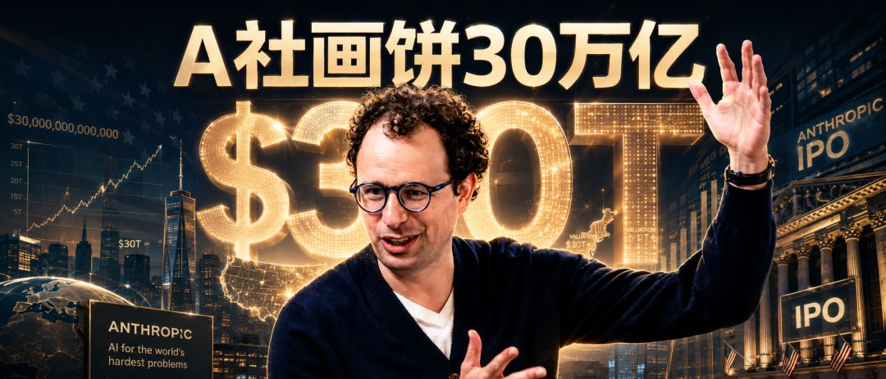
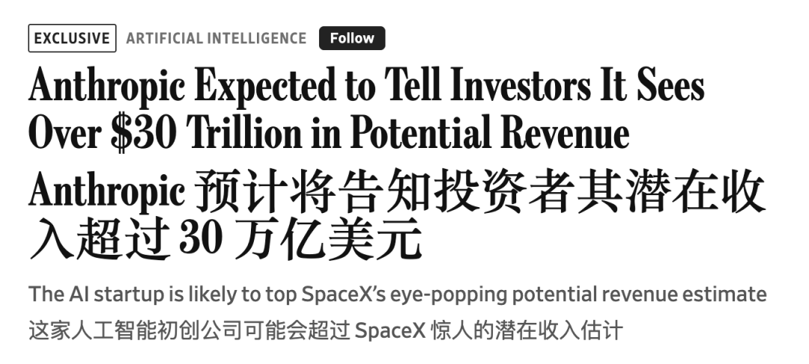
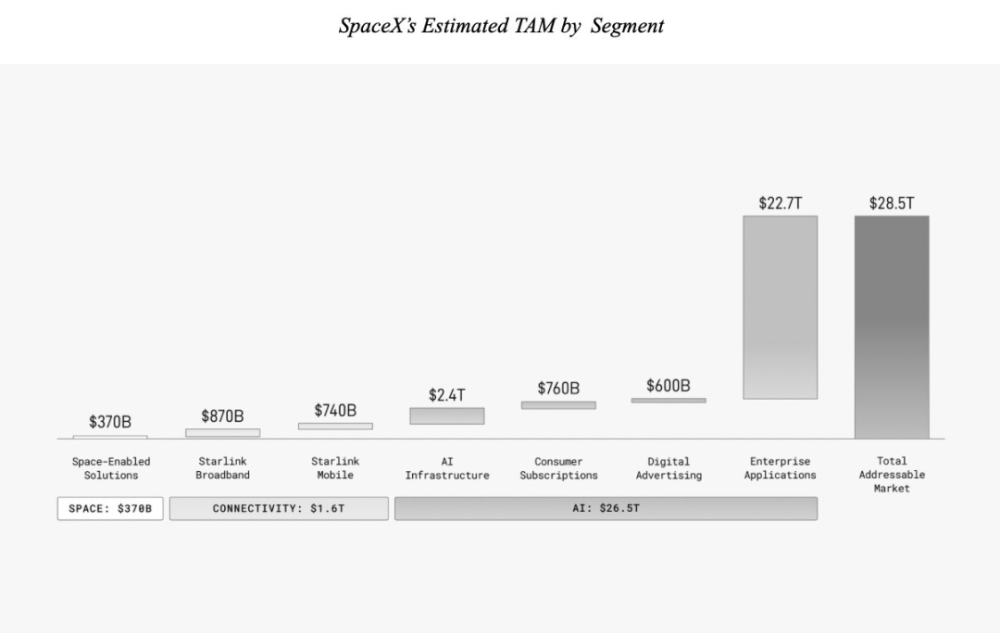
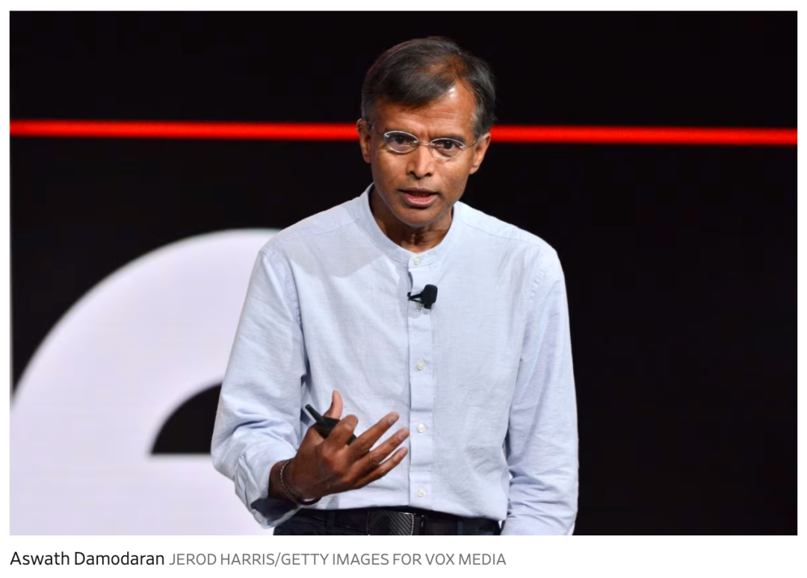
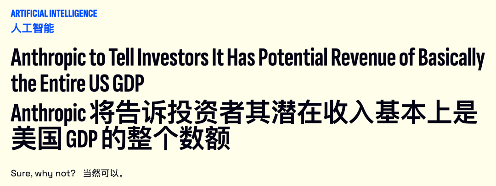
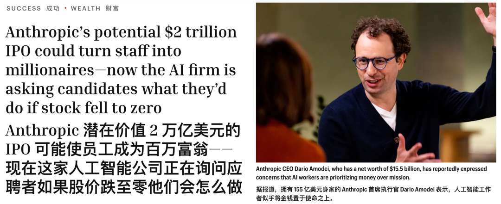
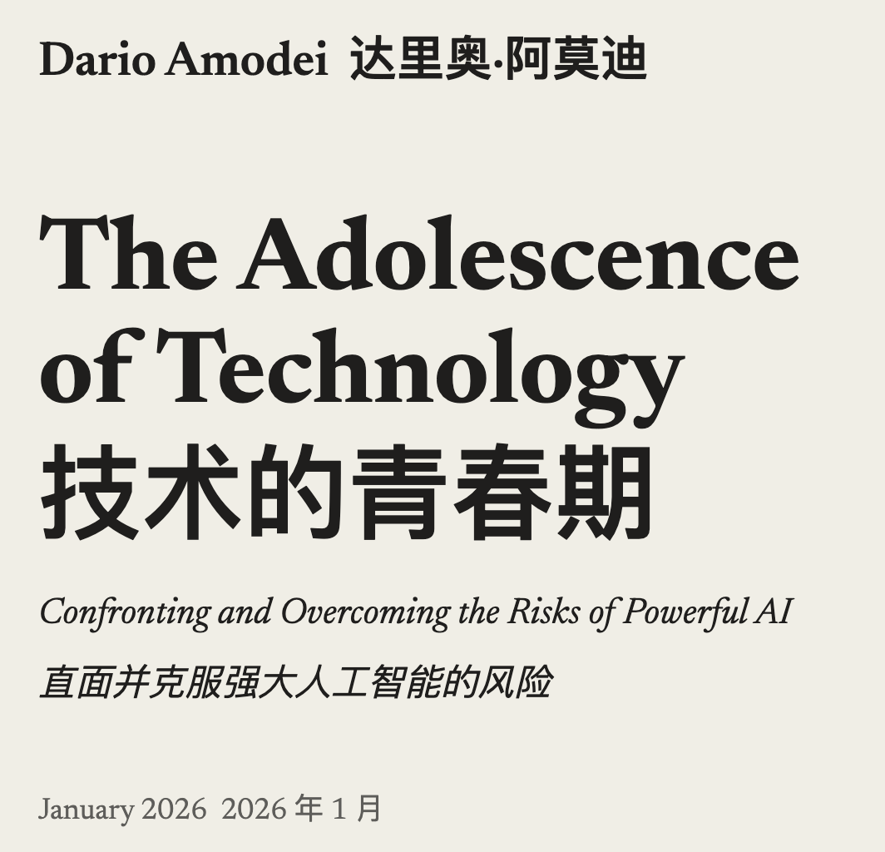
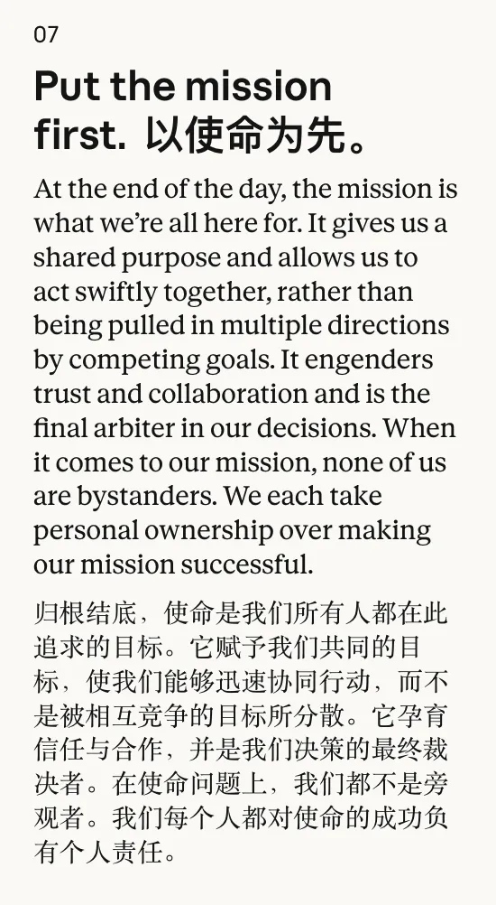

新智元报道
新智元报道

30万亿美元。这是Anthropic准备写进招股书的数字。
30,000,000,000,000美元。
就在昨天，华尔街日报爆料，Claude的缔造者将告诉投资人，它面对的潜在收入机会超过30万亿美元。

Anthropic在6月1日已经向美国证券交易委员会秘密递交了IPO草案，公开版本最快这个月底就会公开。
美国全年GDP约32.4万亿。换句话说，一家成立五年、员工不到四千人的公司，把自己的营收天花板画到了一整个美国那么大。
三个月前，马斯克的SpaceX在招股里写下28.5万亿，称那是「人类历史上最大的可操作市场」。这个纪录还没捂热，就被踩在了脚下。

Anthropic比SpaceX多画了一万五千亿美元。
就好比两个人比谁嘴大，一个说我能吞下整个太阳，另一个说我不仅能吞下太阳，还得加上火星。

这个数字叫TAM——total addressable market，总体可寻址市场。翻译成人话就是：假设你把这门生意百分之百垄断，一年最多能收回多少钱。
TAM是科技公司上市的标配，也历来是最不用负责的那一项。
Uber在2019年报出6万亿美元，口径是全球所有私家车的里程价值加上公共交通服务。WeWork在那次最终流产的IPO里报了3万亿。这两个数字当年都被嘲笑过。
到了AI时代，这把尺子被直接被拉断了。
标普1500里有191家科技公司，去年营收合计2.4万亿美元。Anthropic画出的市场，是它们全部加起来的12倍。
纽约大学金融教授Aswath Damodaran，业内号称「估值院长」。SpaceX发行前他对华尔街日报说过，SpaceX在AI上看到的TAM「已经到了合理范围的尽头，并且还在往外推」。

他说这话时面对的还是28.5万亿。如果他看到30万亿，大概眼镜当场落地。
科技媒体Gizmodo的评价更不客气：公司和投资人之间的对话本来就是一门画得尽可能好看的艺术。30万亿这种数字，基本上是在挑战别人站出来说你吹牛。

问题来了，这数字到底是怎么算出来的？
答案是：把所有能被AI模型完成的工作，全部算进去。
注意，到这一步，这已经不再是给某个行业估市场规模了。
这是给人类可以交出去的全部工作，整体标价。编程、写作、客服、法律、金融分析、医学诊断……凡是人干的，只要AI有可能接手，全部打包，贴上价签，递到华尔街面前。
A 社，你不要这样。
数字之所以「虚」，是因为没人知道AI渗透各行各业的速度，也没人知道它最终能接手多少活。
再看Anthropic眼下的生意，落差就来了。
今年第二季度，它的营收翻了一倍多，达到116亿美元，当前年化收入运转率约470亿。路透8月15日报道，公司预计2028年营收在1900亿到2000亿美元之间，IPO估值就押在这组预测上。
拿最乐观的2000亿去除30万亿，是0.67%。
Anthropic递给投资人的故事因此变成：这个市场大到我只吃掉千分之六，就能撑起两万亿美元估值。
这不像是商业计划书，更像是一道数学题。你看，只要分母足够大，我只要拿一小点就够了。
Anthropic目标估值是2万亿，而其今年5月完成650亿美元融资后的投后估值是9650亿。从私募最后一轮到敲钟那一刻，资本要在几个月里再给它翻一倍。
SpaceX的股价是现成的参照。上市后先涨了一段，8月初盘中跌破105美元，如今又回到135美元发行价附近。
2万亿美元的IPO会让Anthropic员工中的很多人一夜之间成为百万富翁。
SpaceX已经演示过一遍。
Anthropic这次的量级只会更大。
但就在所有人盯着这个数字流口水的时候，公司内部正在用另一个数字筛人。
据Axios 8月24日独家报道，Anthropic现在在文化面试环节直接问候选人：如果公司有一天出于安全考虑放弃AI野心，股价因此跌到零，你会怎么想？
一名候选人把自己的回答发在匿名职场社区Blind上，答得很实在：「我很诚实地说了不，如果股票跌到0我不会开心。我希望在做最多善事、保持道德的同时，建立一个可持续的生意。」
据这位候选人说，面试官对这个回答似乎并不满意。

Anthropic软件工程师岗位的基本工资开到32万至40.5万美元。
这家公司最撕裂的地方，就在这里。
Dario Amodei个人净值约155亿美元——这个数字在5月那轮融资后翻了一倍。
今年1月，他发了一篇两万字长文《技术的青春期》，里面写了一句话：真正要担心的，是一种会撕裂社会的财富集中程度。他还点名批评了那些认为慈善注定是骗局的科技富人，说「令人悲哀的是，很多富人……最近采取了一种愤世嫉俗的虚无主义态度」。

他和包括妹妹Daniela在内的另外六位联合创始人一起承诺，捐出各自80%的财富。以当前估值计算，这笔钱超过860亿美元。
与此同时，他又在担心新员工进来不是为了使命，而是为了暴富。
Anthropic是一家公益公司（Public Benefit Corporation），章程规定它不能只为股东利润最大化。
公司价值观声明写着：归根结底，使命是我们所有人在这里的原因。

这句话过去写在招聘页上，没人需要为它付出代价。现在，它要被写进招股书，写在30万亿美元的旁边。
上市之后，它要面对每个季度的财报电话会，面对分析师追问毛利率，面对股东要回报。
一家宣称使命高于利润的公益公司，正在用人类史上最大的TAM去撬动人类史上最大的IPO之一。
多少是有一点讽刺。
一个CEO，个人身家155亿美元，承诺捐出80%，同时担心员工只想着钱。然后面试的时候问人家：股票跌到零你还干吗？
这种割裂，是这个时代AI公司独有的扭曲——
一边，它把全人类能交给AI的工作打包成30万亿美元，递到华尔街面前。
另一边，它把同一场IPO做成一道面试题，问每个想进来的人：如果这一切归零，你还干吗？
参考资料：https://www.wsj.com/tech/ai/anthropic-expected-to-tell-investors-it-sees-over-30-trillion-in-potential-revenue-a611efea
编辑：所罗门